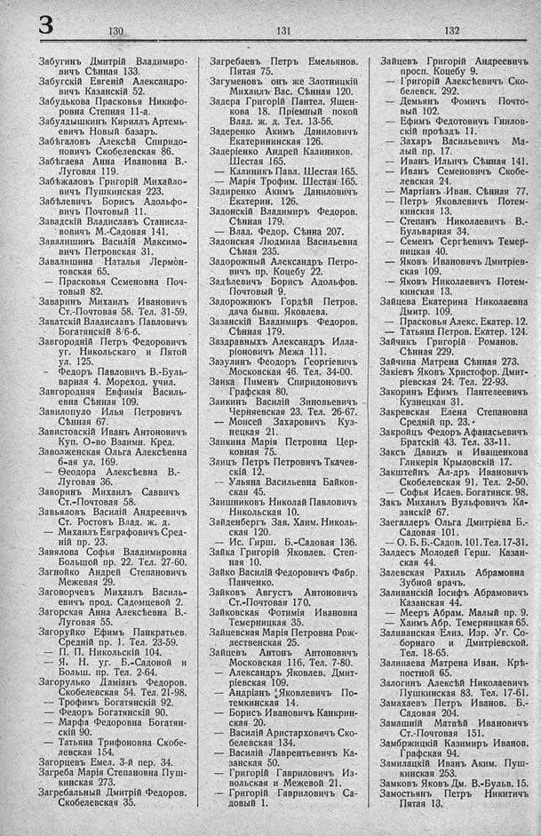

Лист источника 394
Скан

Распознанный текст
3
130
Забугинъ Дмитрій Владимиро-
вичъ Сѣнная 133.
Забугскій Евгеній Александро-
вичъ Казанскій 52.
Забудькова Прасковья Никифо-
ровна Степная 11-а.
Забулдышкинъ Кириллъ Артемь-
евичъ Новый базаръ.
Забѣгаловъ Алексѣй Спиридо-
новичъ Скобелевская 86.
Забѣгаева Анна Ивановна В.-
Луговая 119.
Забѣжаловъ Григорій Михайло-
вичъ Пушкинская 223.
Забѣлевичъ Борисъ Адольфо-
вичъ Почтовый 11.
Завадскій Владиславъ Станисла-
вовичъ М.-Садовая 141.
Завалишинъ Василій Максимо-
вичъ Петровская 31.
Завалишина Наталья Лермон-
товская 65.
— Прасковья Семеновна Поч-
товый 82.
Заваринъ Михаилъ Ивановичъ
Ст.-Почтовая 58. Тел. 31-59.
Заватскій Владиславъ Павловичъ
Богатянскій 8/6-6.
Завгородній Петръ Федоровичъ
уг. Никольскаго и Пятой
ул. 125.
— Федоръ Павловичъ В.-Буль-
варная 4. Мореход. учил.
Завгородняя Евфимія Василь-
евна Сѣнная 109.
Завилопуло Илья Петровичъ
Сѣнная 67.
Завистовскій Иванъ Антоновичъ
Куп. О-во Взаимн. Кред.
Заволженская Ольга Алексѣевна
6-ая ул. 169.
— Ѳеодора Алексѣевна В.-
Луговая 36.
Заворинъ Михаилъ Саввичъ
Ст.-Почтовая 58.
Завьяловъ Василій Андреевичъ
Ст. Ростовъ Влад. ж. д.
— Михаилъ Евграфовичъ Сред-
ній пр. 23.
Завялова Софья Владимировна
Большой пр. 22. Тел. 27-60.
Загнойко Андрей Степановичъ
Межевая 29.
Заговорчевъ Михаилъ Василь-
евичъ прод. Садомцевой 2.
Загорская Анна Алексѣевна В.-
Луговая 55.
Загоруйко Ефимъ Панкратьев.
Средній пр. 1. Тел. 23-59.
— П. П. Никольскій 104.
— Я. Н. уг. Б.-Садовой и
Больш. пр. Тел. 2-64.
Загорулько Даміанъ Федоров.
Скобелевская 54. Тел. 21-98.
— Трофимъ Богатянскій 92.
— Федоръ Богатянскій 90.
— Марфа Федоровна Богатян-
скій 90.
— Татьяна Трифоновна Скобе-
левская 154.
Загорцевъ Емел. 3-й пер. 34.
Загреба Марія Степановна Пуш-
кинская 273.
Загребальный Дмитрій Федоров.
Скобелевская 35.
131
Загребаевъ Петръ Емельянов.
Пятая 75.
Загуменовъ онъ же Злотницкій
Михаилъ Вас. Сѣнная 120.
Задера Григорій Пантел. Ящен-
кова 18. Пріемный покой
Влад. ж. д. Тел. 13-56.
Задеренко Акимъ Даниловичъ
Екатерининская 126.
Задеріенко Андрей Калиников.
Шестая 165.
— Калиникъ Павл. Шестая 165.
— Марія Трофим. Шестая 165.
Задиренко Акимъ Даниловичъ
Екатерин. 126.
Задонскій Владимиръ Федоров.
Сѣнная 179.
— Влад. Федор. Сѣнна 207.
Задонская Людмила Васильевна
Сѣная 235.
Задорожный Александръ Петро-
вичъ пр. Коцебу 22.
Задѣлевичъ Борисъ Адольфов.
Почтовый 9.
Задорожнюкъ Гордѣй Петров.
дача бывш. Яковлева.
Зазанскій Владимиръ Федоров.
Сѣнная 179.
Заздравныхъ Александръ Илла-
ріоновичъ Межа 111.
Зазулинъ Ѳеодоръ Георгіевичъ
Московская 46. Тел. 34-00.
Заика Пименъ Спиридоновичъ
Графская 80.
Заикинъ Василій Зиновьевичъ
Черняевская 23. Тел. 26-67.
— Моисей Захаровичъ Куз-
нецкая 21.
Заикина Марія Петровна Цер-
ковная 75.
Заицъ Петръ Петровичъ Ткачев-
скій 12.
-– Ульяна Васильевна Байков-
ская 45.
Заишниковъ Николай Павловичъ
Никольская 10.
Зайденбергъ Зав. Хаим. Николь-
ская 120.
— Ис. Гирш. Б.-Садовая 136.
Зайка Григорій Яковлев. Степ-
ная 10.
Зайко Василій Федоровичъ Фабр.
Панченко.
Зайковъ Августъ Антоновичъ
Ст.-Почтовая 170.
Зайковская Фотимія Ивановна
Темерницкая 35.
Зайцевская Марія Петровна Рож-
дественская 25.
Зайцевъ Антонъ Антоновичъ
Московская 116. Тел. 7-80.
— Александръ Яковлев. Дмит-
ріевская 109.
— Андріанъ Яковлевичъ По-
темкинская 14.
— Борисъ Ивановичъ Канкрин-
ская 20.
— Василій Аристарховичъ Ско-
белевская 134.
— Василій Лаврентьевичъ Ка-
занская 50.
— Григорій Гавриловичъ Из-
вольская и Межевой 21.
— Григорій Гавриловичъ Са-
довый 1.
132
Зайцевъ Григорій Андреевичъ
просп. Коцебу 9.
— Григорій Алексѣевичъ Ско-
белевск. 292.
— Демьянъ Фомичъ Почто-
вый 102.
— Ефимъ Федотовичъ Гнилов-
скій проѣздъ 11.
— Захаръ Васильевичъ Ма-
лый пр. 17.
— Иванъ Ильичъ Сѣнная 141.
— Иванъ Семеновичъ Скобе-
левская 24.
— Мартіанъ Иван. Сѣнная 77.
— Петръ Яковлевичъ Потем-
кинская 13.
— Степанъ Николаевичъ В.-
Бульварная 34.
— Семенъ Сергѣевичъ Темер-
ницкая 40.
— Яковъ Ивановичъ Дмитріев-
ская 109.
-– Яковъ Николаевичъ Потем-
кинская 13.
Зайцева Екатерина Николаевна
Дмитр. 109.
— Прасковья Алекс. Екатер. 12.
— Татьяна Петров. Екатер. 124.
Зайчикъ Григорій Романов.
Сѣнная 229.
Зайчина Матрена Сѣнная 273.
Закіевъ Яковъ Христофор. Дмит-
ріевская 24. Тел. 22-93.
Закоринъ Ефимъ Пантелеевичъ
Кузнецкая 31.
Закревская Елена Степановна
Средній пр. 23.
Закройцъ Федоръ Афанасьевичъ
Братскій 43. Тел. 33-11.
Заксъ Давидъ и Иващенкова
Гликерія Крыловскій 17.
Закштейнъ Ал-дръ Ивановичъ
Скобелевская 91. Тел. 2-50.
— Софья Исаев. Богатянск. 98.
Закъ Михаилъ Вульфовичъ Ка-
занскій 67.
Заегаллеръ Ольга Дмитріева Б.-
Садовая 101.
-– О. Б. Б.-Садов. 101. Тел. 17-31.
Залдесъ Молодей Герш. Казан-
ская 44.
Залевская Рахиль Абрамовна
Зубной врачъ.
Заливанскій Іосифъ Абрамовичъ
Казанская 44.
— Мееръ Абрам. Малый пр. 9.
— Хаимъ Абр. Темерницкая 65.
Заливанская Елиз. Изр. Уг. Со-
борнаго и Дмитріевской.
Тел. 18-65.
Залипаева Матрена Иван. Крѣ-
постной 65.
Залогинъ Алексѣй Николаевичъ
Пушкинская 83. Тел. 17-61.
Замахаевъ Петръ Иванов. Б.-
Садовая 204.
Замашній Матвѣй Ивановичъ
Ст.-Почтовая 151.
Замбржицкій Казимиръ Иванов.
Графская 94.
Замилацкій Иванъ Аким. Пуш-
кинская 253.
Замковъ Яковъ Дм. В.-Бульв. 15.
Замостьянъ Петръ Никитичъ
Пятая 13.